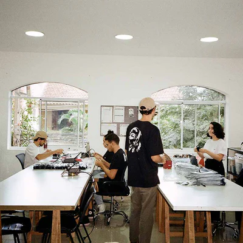

O único fone de alta fidelidade feito para durar.
Descubra o som ultra realista e as peças substituíveis do Kuba Disco e nunca mais cogite comprar outro fone.


Som de alta fidelidade
Peças substituíveis
Conforto para longas sessões
Suporte BR de fábrica